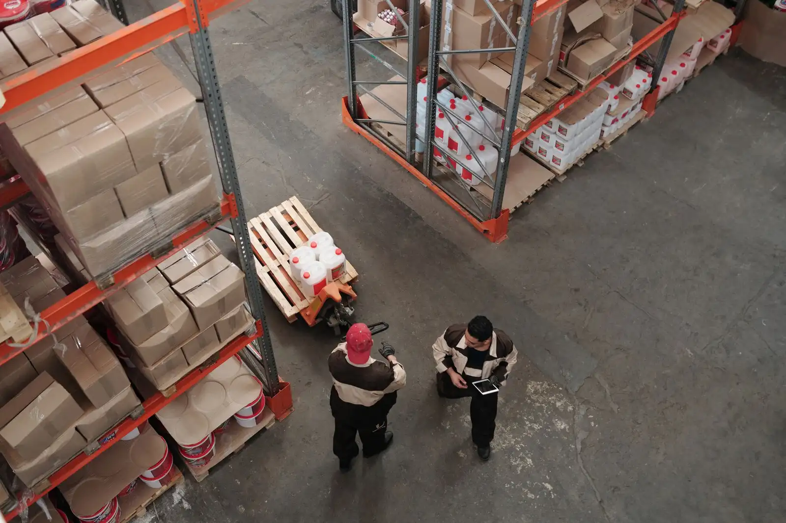

Portway unifies procurement, inventory, and freight data into one live map of your supply chain, so operations teams catch disruption hours before it reaches the dock.
Portway replaces the spreadsheets and phone calls between your suppliers, warehouse, and freight partners with a single source of truth.
Track ocean, air, rail, and road freight on one live map, with automatic delay alerts sent to the people who can act on them.
Balance stock across every warehouse and store automatically, using live demand rather than last quarter's forecast.
Score suppliers on lead time and reliability, then route new purchase orders to whoever can actually deliver on time.
Figures pulled from customer operating reviews across manufacturing, apparel, and electronics.From the first week, teams get a single dashboard that replaces spreadsheets, email threads, and phone calls with suppliers. Every shipment, every warehouse, and every reorder point stays visible in one place — so decisions happen in minutes, not days.

Portway connects to the systems you already run — no rip-and-replace, no six-month rollout.
Link your ERP, WMS, and carrier accounts through pre-built connectors — most teams finish in an afternoon.
Portway pulls in every supplier, warehouse, and lane automatically and builds a live map of your operation.
Tell Portway what counts as a delay or a stockout risk for your business, in your own terms.
Your team gets notified the moment something goes off plan, with enough context to fix it before it escalates.
A mix of operators, engineers, and people who've bought freight for a living.


Testimonials
Many companies already work with us. Praise pleases us, criticism helps us because we want to get better every day.

"Portway gave us complete visibility across our entire supplier network in just weeks."
"Before Portway, we were constantly firefighting delays. Now our operations team gets alerts hours before issues reach the dock. The ROI was immediate and measurable."
San Francisco, California · Electronics Retailer

"We reduced expedited shipping costs by 40% in the first quarter alone."
"The supplier scoring feature alone changed how we make procurement decisions. We now route orders based on real reliability data, not gut feel. Stackly has transformed how we run our supply chain."
Chicago, Illinois · Logistics Manager
Integrations
Pre-built connectors for the ERPs, WMS platforms, and carriers most teams already use — no custom middleware needed.
Same operation, same team — just without the blind spots.

Book a 30-minute walkthrough with our operations team — bring your worst lane and we'll show you what Portway would have caught.